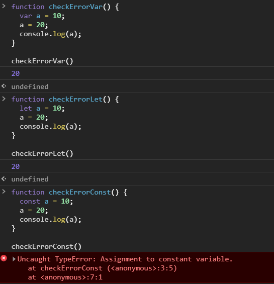
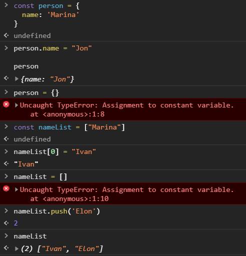
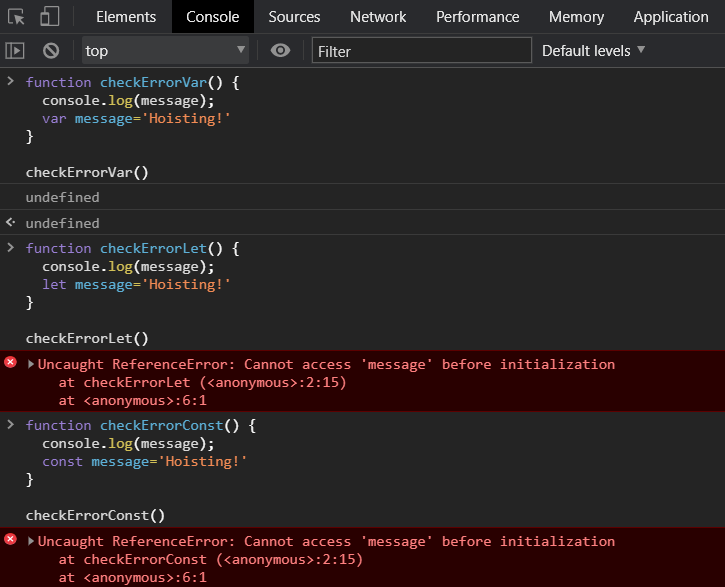

Hi everyone
My name is Marina and I’m a Software Engineer.
In this course «Js in brief» I want to show you what any front-end developer needs to know.
All of the topics presented in this course are just a list with brief explanations.
To become a pro you need to study much deeper, and the links
at the end of each presentation will help you with that.
JavaScript is very interesting, good luck with your studies!
P.S. In this process, you and I will improve our skills together :)
The presentation will be updated as soon as I have free time.
Js in brief
#1. How is js code executed?
To learn how to write and understand Js code, what is Scope, Hoisting, etc., you need to pay attention to how Js code is executed.
2 phases of JS code processing:

#1 Simple Example:
An example to understand what Scope is and how Js works
#2 Simple Example:
Summary
JavaScript code is processed by the engine of this language in 2 phases:
-
Compilation phase —
there is a process of defining variables and functions
(only definition, no value assignment!); - Execution phase — the process of assigning values to variables and function execution.
#2. Variables Scope
Set of rules for storing variables in some location, and for finding them at a later time.
Defines the visibility and lifetime of variables.
This is an important concept to avoid name collisions and to enable automatic memory management.
The concept of Variable Scope in Js can be divided into the following main groups:

Example of Global Scope
If you declare a local variable or function with the same name as a global variable, you effectively ignore the global variable
// Declare a global variable.
var scope = "global";
function checkScope() {
// Declare a local variable with the same name.
var scope = "local/function";
return scope;
}
checkScope() // => "local/function"
Example of Global, Block, and Function scope
// Global scope.
var a = 1;
let b = 2;
const c = 3;
if(true) {
// Local/Block scope - defined by the first curly braces.
var a = 3;
let b = 4;
const c = 5;
console.log('Block scope: ', a,b,c) // => 3 4 5
}
function checkScope() {
// Local/Function scope - defined by the
// first function curly braces.
var a = 6;
let b = 7;
const c = 8;
console.log('Function scope: ', a,b,c) // => 6 7 8
}
checkScope()
console.log('Global scope: ', a,b,c) // => 3 2 3
The code above returns:
Block scope: 3 4 5
Function scope: 6 7 8
Global scope: 3 2 3
Why for console.log('Global scope: ', a,b,c) the value of var a was changed but not let & const values ?
On the 9th line — var a is in the Block scope, but we know that var always has a Function scope:
- At the first Compilation phase of Js, the engine will define var a in the Global scope;
- In the second Execution phase,
assign the value 3 to the var a.
So, now we have var a = 3 instead of var a = 1.
Summary
Variable Scope — defines the visibility and lifetime of variables.
-
Variable Scope can be Local and Global
-
Local Scope divided by:
- Function scope — var;
- Block scope — const vs let.
#3. Hoisting
It is a mechanism in JavaScript that occurs in the Compilation phase, in which variables and function declarations are hoisted to the top of their scope before the code is executed.
The assignment of values remains where you placed it
function foo() {
console.log(message);
let message='Hoisting!'
}
// COMPILATION PHASE:
function foo() {
let message; // hoisting a variable in the 'foo' scope.
console.log(message);
message = 'Hoisting!' // assignment in the same place.
}
To avoid programming errors — declare variables and function expressions before using them
// #1 Example:
function foo() {
console.log(message);
const message='Hoisting!'
}
foo(); // => Uncaught ReferenceError: Cannot access 'message'...
// #2 Example:
function foo() {
const message='Hoisting!'
console.log(message);
}
foo(); // => Hoisting!
Summary
Hoisting — is JavaScript's default behavior of moving declarations to the top in their scope:
To avoid programming errors, it is recommended to follow simple rules:
- Don’t use var — it declares variables whose scope is the function, not the block. That is too broad;
- Declare variables and function expressions before using them.
#4. var, let, const — what the difference?
This question is related to understanding Scope and the Hoisting mechanism.
| keyword | scope | reassign a value | when accessing a variable before it's declared |
|---|---|---|---|
| var | function | yes | undefined |
| let | block | yes | ReferenceError |
| const | block | no | ReferenceError |
Example: reassign a value
However, if the const value is an object or an array, you can change their contents
Example: when accessing a variable before it's declared
Summary
- let, const — has block scope (introduced in ES6), var — function scope;
- const — read-only. However, if the value is an array or an object you can change their contents.